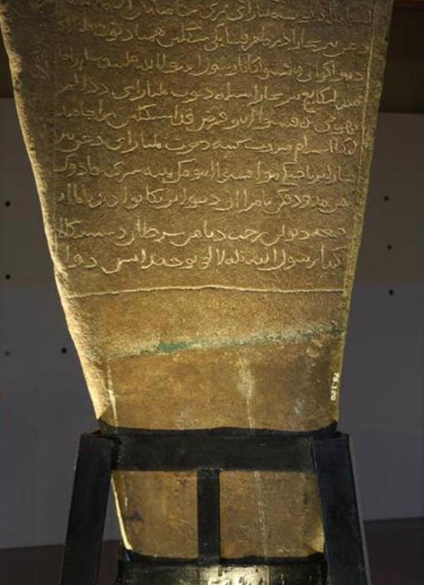
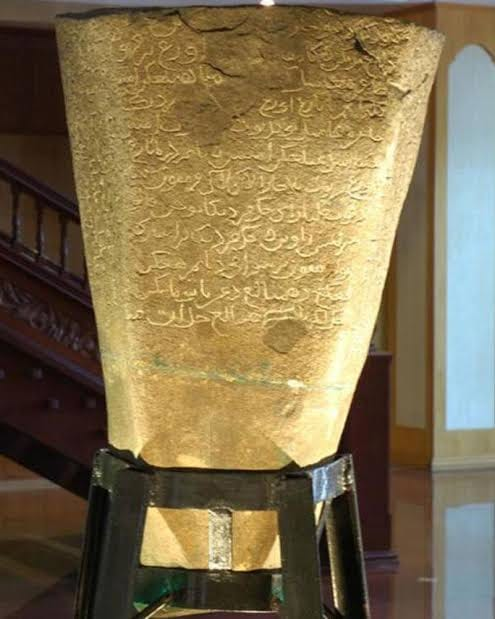
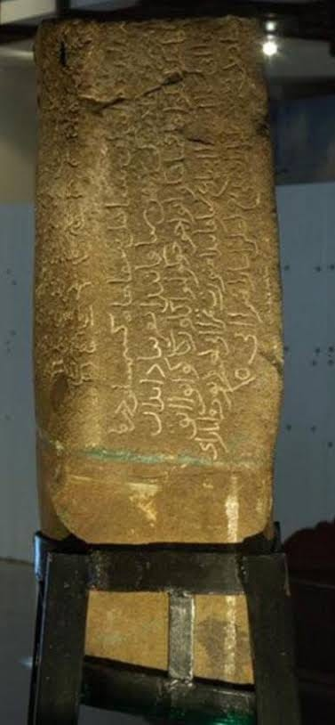

ISU 1
Cabaran Mengekalkan Keadaan Fizikal Batu Bersurat Terengganu
A. Huraian Isu
Batu Bersurat Terengganu merupakan artifak sejarah yang telah berusia lebih 700 tahun dan mempunyai nilai dokumentasi yang sangat tinggi. Keadaan fizikalnya perlu diberikan perhatian khusus bagi memastikan bentuk asal, permukaan batu dan inskripsi tulisan Jawi yang terdapat padanya terus terpelihara.
Sebagai artifak yang diperbuat daripada batu, Batu Bersurat berpotensi terdedah kepada pelbagai faktor kemerosotan seperti perubahan suhu, kelembapan, pencemaran persekitaran dan pertumbuhan organisma pada permukaan batu. Selain itu, pengendalian yang tidak sesuai serta kaedah pembersihan tanpa kepakaran boleh meningkatkan risiko kerosakan terhadap permukaan dan inskripsi asal.
B. Faktor Penyebab
1. Faktor Persekitaran
Perubahan suhu dan kelembapan boleh mempengaruhi keadaan bahan batu dalam jangka masa panjang. Pendedahan kepada persekitaran yang tidak terkawal berpotensi menyebabkan perubahan pada permukaan artifak.
2. Proses Penuaan Semula Jadi
Usia artifak yang telah menjangkau ratusan tahun menjadikan pemantauan keadaan fizikalnya sangat penting. Proses penuaan bahan boleh meningkatkan keperluan pemeriksaan dan penjagaan secara berterusan.
C. Kesan terhadap Kelestarian Warisan
1. Kehilangan Maklumat Sejarah
Kerosakan pada permukaan batu berpotensi menyebabkan sebahagian inskripsi tulisan Jawi menjadi sukar dibaca atau hilang. Keadaan ini boleh menjejaskan maklumat sejarah yang terkandung dalam artifak.
2. Menjejaskan Keaslian Artifak
Rawatan atau pengendalian yang tidak sesuai boleh mengubah keadaan asal permukaan batu. Hal ini boleh menjejaskan nilai keaslian artifak sebagai sumber sejarah.